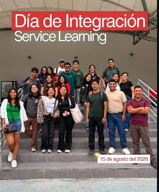
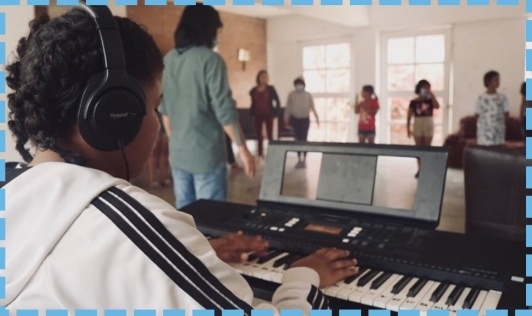
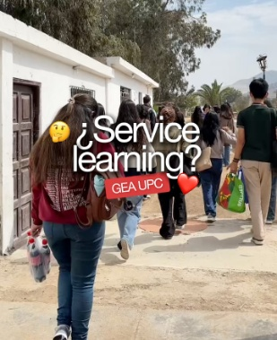
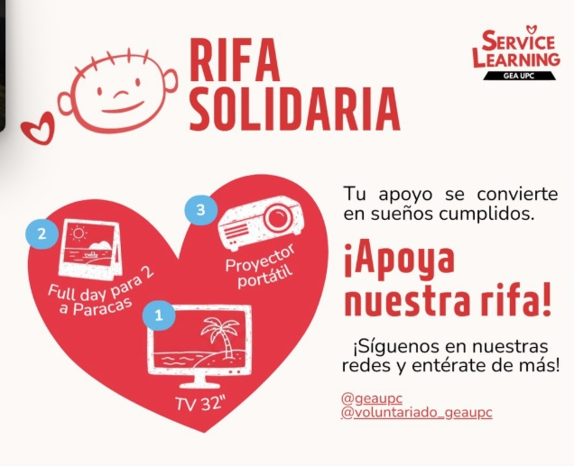

Experiencias artísticas y musicales
Aprender y compartir a través de actividades creativas
APRENDE,
SIRVE YTRANSFORMA.
Conoce Service Learning GEA UPC: un espacio para compartir, aprender y participar en iniciativas solidarias junto a Casa Generación.


Junto a Casa Generación
Pequeñas acciones que hacen grandes conexiones.
¿QUÉ ES SERVICE LEARNING?
Es una experiencia que combina el aprendizaje académico con el servicio a la comunidad, para poner conocimientos y habilidades al servicio de necesidades reales.
En GEA UPC, el voluntariado se vincula con iniciativas como Casa Generación, promoviendo colaboración, empatía y aprendizaje mutuo.
Compartimos experiencias que conectan aprendizaje y acción.
Así entendemos el aprendizaje con propósito
01
Aprender
Aplicar conocimientos y desarrollar habilidades.
02
Colaborar
Compartir tiempo y crear vínculos con la comunidad.
03
Transformar
Reflexionar sobre las experiencias y su impacto.
CADA ACTIVIDAD
DEJA UNA HUELLA.
Explora algunas experiencias compartidas por Service Learning GEA UPC junto a Casa Generación.
Todas
Visitas
Proyectos
Eventos
Día de integración
Encuentro de voluntarios · agosto de 2026

Visitas a Casa Generación
Conociendo y acompañando nuevas experiencias
Más que una galería: historias para compartir.
Aquí se pueden presentar testimonios, aprendizajes y resultados de cada actividad cuando el equipo cuente con información validada.
Las cifras de impacto se publicarán cuando estén verificadas.
TU TIEMPO PUEDE HACER LA DIFERENCIA.
Súmate a un espacio donde aprender, compartir y participar en actividades solidarias con Service Learning GEA UPC.
Me interesa ser voluntario ↗¿Cómo puedo participar?
1
Conoce las convocatorias
Revisa las oportunidades compartidas por GEA UPC.
2
Consulta los requisitos
Cada actividad puede tener condiciones distintas.
3
Manifiesta tu interés
Coordina tu participación mediante los canales oficiales.
Proceso orientativo; sujeto a las convocatorias vigentes.
Preguntas frecuentes
¿Necesito experiencia previa?
No necesariamente. Depende de la convocatoria y de las actividades disponibles. Revisa los requisitos que publique el equipo.
¿Cómo conozco los horarios?
Los horarios y fechas se comunican por los canales oficiales de GEA UPC y del voluntariado.
¿Puedo apoyar de otras maneras?
Sí. En la sección Apóyanos puedes conocer otras formas de colaborar; los aportes económicos requieren canales autorizados por Finanzas.
Síguenos en Instagram para obtener información oficial: @geaupc y @voluntariado_geaupc
CADA PEQUEÑO APORTE CUENTA.
Conoce necesidades e iniciativas solidarias y encuentra maneras de apoyar el trabajo que Service Learning realiza junto a Casa Generación.
¿Para qué se pueden usar los aportes?
Materiales para talleres
Recursos de apoyo para actividades educativas y creativas.
Necesidades de actividades
Implementos o recursos definidos por cada iniciativa.
Campañas solidarias
Colaboración en acciones organizadas por el voluntariado.

Rifa solidaria
Ejemplo de iniciativa mostrada en las redes de GEA UPC. Consultar si existen nuevas ediciones.
¿Cómo puedo realizar un aporte?
Los medios de pago deben ser publicados por la Comisión de Finanzas. No compartas dinero antes de confirmar el canal oficial.
QR e instrucciones oficiales: por confirmar
Aquí se publicará el medio validado y, opcionalmente, un formulario para registrar el aporte.
¡Gracias por querer ser parte del cambio!
Para consultas, contacta al equipo mediante sus redes oficiales.